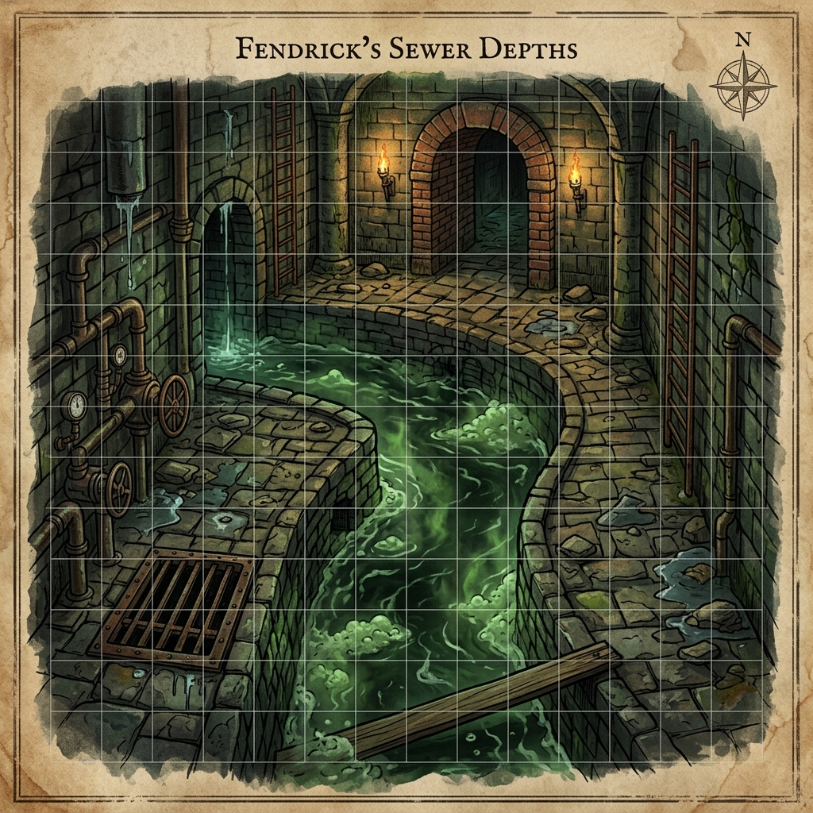
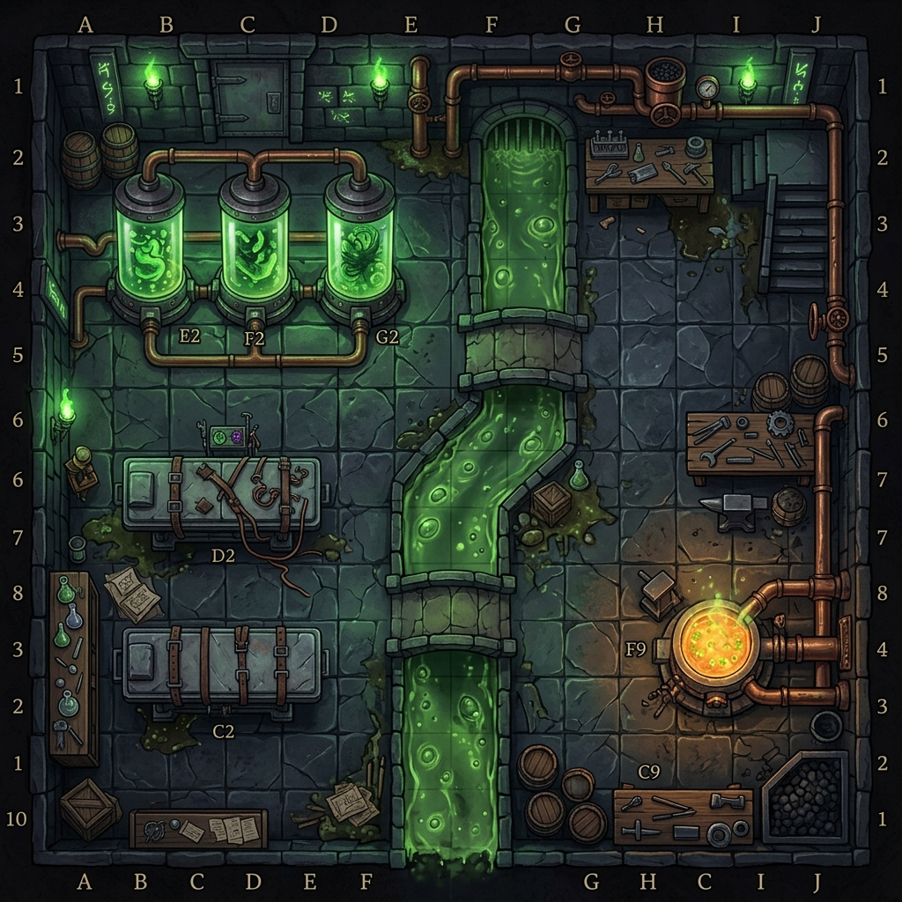

THE DEEPMIND TEAR
A Campaign Module for Levels 10 - 13
D&D 3.5 / Pathfinder 1E Rules
Prepared for Campaign Release
Blackwater Quay Underworld Chronicles
The Deepmind Tear: Campaign Master Guide
A TTRPG Adventure Arc for Levels 10–13 (D&D 3.5 / Pathfinder 1E)
---
1. INTRODUCTION & ADVENTURE BACKGROUND
The Campaign Premise
The Deepmind Tear is a dark fantasy, planar-political campaign set in the damp, fog-shrouded streets and deep subterranean vaults of the city-state of Blackwater Quay. The campaign centers on an alliance of convenience between Sablehook (a criminal syndicate of biomantic outcasts and survivors of the Thessalan Consortium), The Tarkanan's Marked Syndicate (the Sharn-style aberrant dragonmark underworld), and the Lords of Dust (an ancient cabal of shape-shifting fiends).
Together, they must prevent the Elder Node—a massive, subterranean mind flayer overmind—from opening a permanent rift to The Void of Madness (the Realm of Madness). If the rift opens, the alien lords of flesh-warping, the Daelkyr, will break their seals and dissolve the region into formless chaos.
---
History of the Thessalan Consortium's Downfall
The Thessalan Consortium was once a prestigious cabal of wizards and biomancers who operated deep-underground research labs beneath the Quay. They specialized in cross-breeding magical beasts and harnessing planar energy. Ten years ago, an experiment involving The Void of Madness bleeding went horribly wrong.
The planar radiation dissolved their primary containment cells, warping the researchers into compliant thralls and unleashing the Elder Node's telepathic net. The survivors of these experiments—a mixture of spliced humanoids, fey, and aberrations—banded together under the leadership of Banki to form Sablehook, occupying the old foundations and swearing to prevent another planar tear.
---
The Role of Banki and Kael
- Banki (The PixIllithid): The leader of Sablehook. Originally a fey pixie, he was subjected to agonizing neural splicing by the Thessalan Consortium, merging his biology with an illithid. However, he is not connected to the Elder Brain's hive mind. Instead, he and the other survivors share a closed-loop collective consciousness. Banki's implement, the Null-Fang, channels the Tri-Weave (arcane, psionic, divine) to negate spells and psionics.
- Captain Mikhailis Vael-Kaelor (Kael): The "Sovereign Corsair" and "Severing Edge" of the Vael-Kaelor clan. A towering, half-minotaur fey monstrosity with phase-shifting wings, displacer tentacles, and eldritch claws. He leads a corsair flotilla from his flagship, the Onyx Wake. While he mockingly wears the title "Auditor" to humor his brother Banki's rigid mindset, Kael is a brutal, chaotic pirate. His fractured chronal sense (gained from The Void of Madness exposure) allows him to read gravity and time distortions, making him the only guide capable of navigating the Deepmind Annex.
---
The Elder Node's Shadow (Daily Intrusion Table)
To simulate the ever-present threat of the Elder Node's telepathic net, the DM rolls 1d20 at the start of each in-game day. This determines how the overmind's network disrupts the characters:
| Roll (1d20) | Event | Mechanical Effect |
| :--- | :--- | :--- |
| 1–5 | Quiet Timeline | The Elder Node is quiet, focusing its energies on the rift core. No intrusion occurs. |
| 6–9 | Psychic Whisper | Telepathic static echoes in the players' minds. All characters must succeed on a DC 14 Will save or take a -1 penalty to Initiative and Charisma-based checks for the next 24 hours. |
| 10–12 | Gravity Distortion | The local gravity fluctuates. For 1d4 hours, characters move at a +10 ft. bonus to speed, but suffer a -2 penalty on melee attack rolls as they float off the stone. |
| 13–15 | Compliance Sweep | The Choir of the Below sends hunters. The next combat encounter is joined on Round 3 by 1d4 Compliant Sewer Enforcers seeking to capture the party. |
| 16–18 | Fleshwarped Flare | A localized wave of planar energy erupts. Living creatures within 30 ft. of the surge must succeed on a DC 16 Fortitude save or take 1d4 points of Dexterity damage as their joints temporarily fuse. |
| 19–20 | Mind Blast Beacon | The party triggers a psychic alarm. A strike team consisting of 2 Dolgaunts and 1 Thessalan Displacer Beast ambushes them within 1d4 hours. |
---
2. CAMPAIGN STRUCTURE & ACTS
The campaign is structured into four distinct acts, taking the characters from street-level investigations to a high-stakes planar siege.
graph TD
Act1["Act I: Whispers in the Sluices (Level 10)
Infiltrate the Sluice Districts & Expose the Chemical Rings"] --> Act2["Act II: The Fleshwarped Foundry (Level 11)
Raid the Thessalan Consortium's Subterranean Vats"]
Act2 --> Act3["Act III: Crimson Sails Over the Quay (Level 12)
Defend against the Githyanki Air Raid & Forge the Tri-Weave Shroud"]
Act3 --> Act4["Act IV: The Deepmind Annex (Level 13)
Descend into the Brine-Veins & Seal the The Void of Madness Tear"]
---
ACT I: WHISPERS IN THE SLUICES (Level 10)
- Goal: Discover how the Elder Node is manipulating the city's surface.
- Summary: The characters are hired by Sable (Banki's tactical commander) to investigate a series of kidnappings in the Northern Sluices. They discover that a local cult, the Choir of the Below, is distributing "Elder Node derivative compounds" to chemically comply the populace. By working with The Tarkanan's Marked Syndicate scouts, the party traces the supply line to a flooded sewer vault, where they defeat the Node's surface avatar, uncovering plans for a planar rift.
#### Boxed Text (Read-Aloud Scene):
> The air in the Northern Sluices is thick with the stench of vinegar, rotting refuse, and sulfurous sewage gas. Sludge overflows the stone gutters, weeping down from the brick vaults above in greasy streaks. Below the hanging wooden shacks of the city's outcasts, you can hear the telepathic resonance—a low, rhythmic thrumming that vibrates in the back of your skull. Red, glowing sigils of the Choir of the Below are painted on the iron lock doors, marking the entry to the flooded vaults.
- Encounter Outline:
Encounter I-1:* Sluice Blockade (4 Sewer Thugs, 2 Compliant Thralls; CR 10).
Encounter I-2:* The Acidic Locks (Sewage hazard, 1 Thessalan Displacer Beast prototype; CR 11).
Encounter I-3:* Cult Altar (1 Choir Priest, 2 Dolgaunt Cell-Guards; CR 12).
- Tactical Environment: Flooded walkways. Combatants must succeed on a DC 14 Balance check to run. Slipping causes the character to fall into the 5-ft deep sludge channels, dealing 1d6 points of acid damage and exposing them to sewer rot.
---
ACT II: THE FLESHWARPED FOUNDRY (Level 11)
- Goal: Destroy the Thessalan Consortium's local stronghold and secure their biological suppressants.
- Summary: The Thessalan Consortium has established a secret "Fleshwarped Foundry" in the Belowmarket Deep, breeding mutated displacer-beasts and war-beasts. The characters must coordinate a diversionary surface riot with The Tarkanan's Marked Syndicate while Kael's boarding crew (led by the alchemist Suture and first mate Dreadjaw Rellis) holds the surrounding canal vectors. Infiltrating the foundry, the characters must destroy the growth vats and secure the Consortium's research journals containing the formulas needed to neutralize the Elder Node's secretion chains.
#### Boxed Text (Read-Aloud Scene):
> The Belowmarket Deep opens into a gargantuan cavern illuminated by volcanic fissures. Amidst the duergar forges and crowded market stalls, a dark basalt fortress looms over the green-sludge canal vectors. Heavy copper pipes run along the exterior walls, pulsing with glowing green chemical slurries. The iron gates are locked, and from the security grates above, the smell of burnt hair and chemical acid drifts over the docks. Steam whistles from venting valves, echoing like the breathing of a massive beast.
- Encounter Outline:
Encounter II-1:* Canal Gates (4 Consortium Guards, 1 Mutated Sea-Wolf; CR 11).
Encounter II-2:* The Vat Room (Vespera the Fleshwarper, 2 Thessalan Displacer Beasts; CR 12).
Encounter II-3:* The Archives (1 Flesh Golem prototype, 2 Dolgaunts; CR 12).
- Tactical Environment: Growing vats. The room is filled with large glass cylinders. Hitting a canister (AC 10, HP 15) shatters it, releasing green acid in a 10-ft radius (dealing 3d6 acid damage and spawning a mutated crawling claw natural hazard).
---
ACT III: CRIMSON SAILS OVER THE QUAY (Level 12)
- Goal: Defend Sablehook from a Githyanki air raid and steal the displacement shield technology.
- Summary: A Githyanki raiding fleet attacks Blackwater Quay, hunting down the deserter Zaniph, the rift-sealer Kaelen Grey, and the "aberrant" fey pirate Kael. As Githyanki spelljamming galleons rain psychic fire, The Tarkanan's Marked Syndicate grounds their skiffs and Terik (the rakshasa) projects a displacement shield over the harbor. The party must defend Sablehook's walls alongside Kael's crew. Inside the vaults, Kaelen Grey ("Suture") scans the shield's stressed runes, allowing Banki to reverse-engineer it. The act ends with a daring boarding action on the flagship, Vlaakith's Pride, launched from the deck of Kael's flagship, the Onyx Wake. Banki uses the contract loophole to keep the silver sword, triggering the Tri-Weave Shroud to hide Sablehook.
#### Boxed Text (Read-Aloud Scene):
> The ceiling of the subterranean harbor cracks as three massive Githyanki spelljamming galleons break through the upper rock strata. Their silver hulls catch the green glow of the quay's alchemical lights, and from their ballista ports, psychic fire rain down onto the stone docks. Sablehook’s bells ring in alarm. The harbor water churns as Captain Mikhailis's flagship, the Onyx Wake, pivots to intercept, its sails of dark fey-metal catching the air. From the sky, Githyanki raiders slide down ropes, their silver blades drawing arcs of light in the fog.
- Encounter Outline:
Encounter III-1:* Harbor Walls (4 Githyanki Raiders, 1 Red Dragon Wyrmling; CR 12).
Encounter III-2:* Flagship Boarding (Commander Zaniph's former captain, 3 Githyanki Knights; CR 13).
Encounter III-3:* The Shroud Core (Defending Banki from Githyanki astral stalkers; CR 13).
#### Siege of Sablehook Victory Tracker
During the Githyanki air raid in Act III, the party accumulates Victory Points (VP) based on their tactical successes. The final tally determines the condition of the survivors and starting assets in Act IV:
- VP Opportunities:
Activate the Shroud:* Complete the shield scan and start the Tri-Weave Shroud (+3 VP).
Deploy Tarkanan Snipers:* Secure the harbor towers (+2 VP).
Repel the Harbor Boarders:* Lead Kael's sailors to protect the fleet docks (+2 VP).
Defeat the Githyanki Commander: Slay Commander Zaniph's former captain on the deck of the Pride* (+4 VP).
Protect the Ritualists:* Prevent Kaelen Grey or Banki from taking damage during the scans (+2 VP).
- Campaign Outcomes:
* 11+ VP (Epic Victory): Sablehook stands tall. The Tri-Weave Shroud works at 100% efficiency. The players begin Act IV with full supplies, a +2 bonus on all faction renown tracks, and a Chronal Chronometer already in their inventory.
* 7–10 VP (Pyrrhic Victory): Sablehook is damaged. Several of Kael's crew are wounded. The Shroud flickers. The players must spend 3,000 gp in supplies to repair the docks, and their starting renown is unmodified.
6 or less VP (Disastrous Retreat): Sablehook is overrun. The harbor burns. Survivors retreat into the deep caverns. In Act IV, all characters start with a permanent fatigued* condition due to sleep deprivation and minor injuries, which cannot be removed until they reach the Cathedral of Whispers.
---
ACT IV: THE DEEPMIND ANNEX (Level 13)
- Goal: Seal the The Void of Madness Tear and survive the rakshasa double-cross.
- Summary: Compiled as a standalone module (Act_IV_Descent_into_the_Deepmind_Annex). The party descends into the brine-veins, navigates the gravity flues, completes the sealing ritual while combating the dragon Oraxis, and utilizes Kael's temporal loop to reverse Hruujj's betrayal.
---
3. ADVENTURE HOOKS & PLAYER MOTIVATIONS
- The Aberrant Mark Hook (Tarkanan): One or more PCs bear aberrant dragonmarks. The proximity of the The Void of Madness rift is causing their marks to weep blood and discharge erratic magic. To save their own lives, they must help Sablehook seal the tear.
- The Planar Scholar Hook (Lords of Dust): The PCs are contacted by a disguised rakshasa who offers them access to ancient draconic prophecy fragments if they help a local "syndicate" (Sablehook) deal with an extraplanar threat in the harbor.
- The Escapee Hook (Consortium): The PCs are former test subjects who escaped the Thessalan Consortium's annex along with Banki. They must protect their new sanctuary (Sablehook) from being reclaimed.
---
4. MILESTONE PROGRESSION & WEALTH BY LEVEL (WBL) INDEX
To ensure a balanced campaign, character progression and treasure distribution are indexed to standard D&D 3.5 / Pathfinder WBL progression:
Milestone XP Pacing
- Start of Campaign: Characters begin at Level 10.
- End of Act I: Level up to Level 11 upon defeating the surface avatar in the Northern Sluices.
- End of Act II: Level up to Level 12 after destroying the growth vats in the Fleshwarped Foundry.
- End of Act III: Level up to Level 13 after boarding Vlaakith's Pride and sealing the harbor.
- Act IV Climax: Reaching the end of the campaign at Level 13.
Wealth By Level (WBL) Target Progression
- Level 10 (Start): 49,000 gp starting gear.
- Level 11 (Act II): 66,000 gp.
Key Item Found:* Formula of Thessalan Suppressants (Allows Suture to brew 3 free healing mutagens).
- Level 12 (Act III): 88,000 gp.
Key Item Found:* Tri-Weave Silver Blade (+3 silver short sword that ignores spell and power resistance).
- Level 13 (Act IV): 110,000 gp.
Key Item Found:* The Null-Fang (Wielded by Banki; anchors the Sovereign Thread. Grants PCs access to its magic negation field).
Gazetteer & Faction Renown: Blackwater Quay Underworld
Campaign Setting Guide and Reputation Mechanics
This guide provides the Dungeon Master (DM) with a detailed overview of the city-state of Blackwater Quay and introduces the Faction Renown System, allowing players to track their standing, earn mechanical favors, and navigate the shifting alliances of the campaign.
---
PART I: THE BLACKWATER QUAY GAZETTEER
Blackwater Quay is a subterranean port city carved into the massive cavern systems of the Underdark, directly beneath a major maritime trade route. It is a city of damp stone, green-filmed water channels, and perpetual fog, illuminated only by bioluminescent mosses, alchemical lanterns, and the glowing runes of smuggling ships.
+---------------------------------+
| THE HARBOR & LOCKS |
+---------------------------------+
||
+---------------------------------+
| THE NORTHERN SLUICES |
+---------------------------------+
||
+---------------------------------+
| THE BELOWMARKET DEEP |
+---------------------------------+
||
+---------------------------------+
| SABLEHOOK COMPOUND |
+---------------------------------+
---
1. THE DISTRICTS & NEIGHBORHOODS OF THE QUAY
The Northern Sluices (The Sewage Hub)
- Atmosphere: Damp, cramped, and foul-smelling. The air is thick with sulfurous sewage gases and alchemical runoff from the surface city above.
- Description: A maze of stone walkways, iron grates, and deep drainage channels where the city's waste is filtered. The poorest citizens and outcasts build hanging wooden shacks over the channels.
- Key Location: The Gull & Gasket Vaults: A repurposed sluice station that serves as a low-profile tavern and smuggling depot. Beneath its beer cellars lie the heavily warded vaults where Sablehook coordinates their surface intelligence.
The Belowmarket Deep (The Subterranean Bazaar)
- Atmosphere: Chaotic, loud, and smelling of roasting meat, ozone, and wet fur.
- Description: A massive, multi-tiered cavern that serves as the black-market trade hub of the region. Anything can be bought here for the right price, from forbidden fleshwarped beasts to illicit soul-gems.
- Key Location: The Obsidian Anvil: A duergar forge run by Hroth. The forge is built directly over a volcanic fissure, sheathing smuggling vessels in light-devouring blackwater ironwood.
- Key Location: The Barnacle Vault: A coral cavern where Mother Gutter resides, offering deep-sea enchantments to desperate sailors.
Sablehook's Territory (The Inner Sanctuary)
- Atmosphere: Sterile, quiet, and tense. The smell of vinegar and cold iron hangs in the air.
- Description: Located in the high-security vaults of the city's old foundations. Unlike the chaotic bazaar, Sablehook's territory is run with clockwork efficiency.
- Key Location: Suture's Clinic: A clean, white-tiled laboratory where Kael's apprentice, Suture, performs biomantic surgeries, harvests biological samples, and grafts physical enhancements onto the syndicate's enforcers.
---
2. SABLEHOOK HAVEN DIRECTORY & SERVICES
This directory details the functional services, merchant inventories, and rumor networks available to the party in the Sablehook safehouse.
A. The Blackwater Taproom (The Gull & Gasket)
- Proprietor: Barnaby (a retired sea-wolf hybrid).
- Safe Rest Rules: Staying at the taproom costs 5 sp per night. It acts as a safe haven; resting here allows characters to heal an extra +1 HP per level and recover 1 point of temporary ability damage (such as from psionic strain or Blue-Drop withdrawal) per night.
- Carousing & Rumors: For 5 gp (requires a Gather Information check DC 12), a character can roll on the Underworld Rumor Table to uncover vital clues:
| d20 Roll | Underworld Whisper / Rumor | Target Event |
| :--- | :--- | :--- |
| 1 | "Spies say spelljamming ships are cruising the Astral borders, looking for a deserter named Zaniph." | Act III Foreshadowing |
| 2 | "Suture has been buying up troll blood. Rumor is he's splicing tissue to heal severed limbs." | Act II / Grafts |
| 3 | "A bronze dragon named Oraxis has been spotted in the outer caverns. The Chamber is watching." | Act IV Standalone |
| 4 | "They say Banki's Null-Fang can tear through magic like paper, but it drains his mind to use." | Act IV Climax |
| 5 | "The Consortium's foundry in the Belowmarket is breeding displacer prototypes. Vespera is running the vats." | Act II Stronghold |
| 6 | "Banki is looking for the pieces of an ancient Dhakaani silver blade. He needs it to forge the Shroud." | Act III Shroud |
| 7 | "Thora is planning a sewer strike on the watch. She needs a distraction on the surface." | Act II Diversion |
| 8 | "Terik has been spending ancient coinage. He's buying up lead and silver. Why does a merchant need sealing metal?" | Act IV Betrayal |
| 9 | "Watch out for the blue drops. The watch is putting it in the outer wells to keep the poor compliant." | Act I Chemical Ring |
| 10 | "Captain Mikhailis was seen arguing with Banki. The pirate wanted to raid the Githyanki flagship directly." | Act III Flight |
| 11 | "Deep caverns are shifting. The gravity flues are flowing backward. You'll need a guide who reads timelines." | Act IV Standalone |
| 12 | "First mate Rellis got his metal jaw from a fey-foundry. They say it echoes when he shouts." | Act II Boss Info |
| 13 | "A merchant sold a fiendish siphon core to Terik. It's designed to lock down planar relics." | Act IV Trap Setup |
| 14 | "Commander Zaniph has a bounty. The Vlaakith loyalists want her dead or alive." | Act III Ally Info |
| 15 | "Consortium vats contain troll-flesh and acid. If you throw a torch in there, the whole block will blow." | Act II Vulnerability |
| 16 | "Kessler is recruiting aberrant marks for a defense line. He's paying in cold iron." | Act III Preparations |
| 17 | "Mother Gutter has fey-metal caltrops. They slice right through wild shape and fey skin." | Act II Tactics |
| 18 | "The Sovereign Anchor enforces law on reality. When active, portals lock down and teleportation fails." | Act IV Sealing |
| 19 | "Duergar smiths are making lead-silver armor wards to hide from mind flayers." | Act III Shielding |
| 20 | "The mind flayer node isn't just a brain; it's a doorway. The Void of Madness is bleeding through the bottom." | Campaign Finale |
B. Suture's Clinic (Biomantic Services)
Suture is a level 12 alchemist/fleshwarper. He offers the following services to PCs (costs in gold and renown):
- Graft Surgeries: Suture can apply any graft from the Player's Guide. His base Heal check modifier is +18 (+23 if using Grafting Salts).
- Healing Services:
Remove Disease / Neutralize Poison:* 150 gp (requires Sablehook Renown +2).
Restoration (Ability Restoration):* 250 gp (requires Sablehook Renown +4).
Heal Spell:* 600 gp (requires Sablehook Renown +5).
- Consortium Secrets: If the players bring Suture a fresh aberration core, he can refine it into a Mutagenic Infusion (heals 3d8+5 HP, but grants a -2 penalty to Will saves for 24 hours).
C. The Ironwood Exchange
A smuggling warehouse run by a bugbear rogue named Grish.
- Inventory & Weapon Upgrades:
Blackwater Ironwood Shield:* +150 gp. Reduces spell damage from sonic/acid by 2.
Fey-Metal Coating:* 300 gp. Applies cold iron coating to one weapon, bypassing DR/cold iron for 1 week.
Lead-Silver Lining:* 200 gp. Adds lead backing to a pouch or chest, shielding contents from detection spells.
Blue-Drop Dose:* 150 gp (requires Sablehook Renown +2).
---
PART II: FACTION RENOWN & THE FAVOR SYSTEM
As the players complete missions, their choices will alter their reputation with the three core factions of the alliance, as well as their Suspicion Level with the city authorities.
1. HOW IT WORKS
Renown is tracked on a scale of -10 to +10 for each faction. Players begin at 0 (Neutral).
- Positive Renown (+1 to +10): Unlocks Faction Favors, discounts, and mechanical support.
- Negative Renown (-1 to -10): Factions become hostile, send hit squads, or refuse to trade.
Hostile (-10 to -3) <---> Neutral (-2 to +2) <---> Allied (+3 to +10)
---
2. THE FACTION TRACKS
A. SABLEHOOK (The Syndicate)
Led by Banki and coordinated by Sable, Sablehook offers biological enhancements and intelligence network support.
Renown -5 (Marked Target): Sablehook smugglers actively ambush the party in the sewer locks. PCs suffer a -2 penalty to all Charisma checks with underworld entities in Blackwater Quay.
Renown +2 (Associate): Access to Suture's alchemical shop. The party receives a 10% discount on alchemical items, potions, and basic grafts.
Renown +5 (Lieutenant): Tri-Weave Cloaking. Sablehook provides the PCs with warded lead cases that shield their items from all psionic and arcane scans. The PCs can call on a Sablehook smuggling crew to transport assets through the locks undetected.
Renown +8 (Sovereign Ally): Vael-Kaelor Comm Link. Banki grants the party access to the outer loop of the Vael-Kaelor collective consciousness. Once per day, the party can communicate telepathically with anyone in Blackwater Quay without a roll, bypassing wards.
Renown +10 (The Severing Edge): The party can request a Kael Strike. Once per campaign, Captain Mikhailis (Kael) deploys the Onyx Wake to blast a path through an enemy flotilla or incinerate an entire dockside block to clear their escape.
---
B. HOUSE TARKANAN (The Aberrant Mark Underworld)
Led by Thora, The Tarkanan's Marked Syndicate offers tactical assassin networks and aberrant mark enhancements.
Renown -5 (Contract Out): Tarkanan shadows track the party. During random encounters on the surface, there is a 50% chance a Tarkanan assassin attacks from stealth, launching a poisoned bolt (Fort DC 16 or sleep).
Renown +2 (Marked Friend): Safehouse Access. The party is granted access to the Tarkanan sewer bunkers, providing a secure location to rest where they cannot be tracked by mundane or magical means.
Renown +5 (Mark-Bearer): Aberrant Weaponry. Thora grants the party access to their private smiths. Weapon attacks made by the party can be coated in Tarkanan acid (dealing +1d6 acid damage on hits, lasts for 1 hour; cost 50 gp per vial).
Renown +8 (Shadow Agent): Tarkanan Support. Once per combat, when operating in the Sluice Districts or surface, the party can call in a sniper strike. One target takes 5d6 sneak attack damage from a hidden crossbowman (Ref DC 18 half).
Renown +10 (Dragonmark Lord): Aberrant Synergy. The party can buy custom magic items that enhance aberrant dragonmarks, allowing them to cast their mark spells an extra time per day without taking the usual physical toll.
---
C. THE LORDS OF DUST (The Fiends)
Coordinated by Terik (Hruujj), the Lords of Dust offer ancient secrets, raw wealth, and occult manipulation.
Renown -5 (Prophecy Curse): The fiends shift their calculations. The party suffers a permanent -2 penalty on all saving throws against spells of the Enchantment or Illusion school as the Lords of Dust weave fate against them.
Renown +2 (Mercenary): Fiendish Insight. Terik provides the party with historical intelligence, granting a +4 bonus on History or Arcana checks relating to ancient fiends or the Draconic Prophecy.
Renown +5 (Contractor): Rakshasa Shroud. Terik provides the party with 3 Disguise Tokens. When cracked, they cast Disguise Self (Caster Level 10) and shield the user's alignment from detection for 8 hours.
Renown +8 (Prophecy Weaver): Ancient Pact. The Lords of Dust offer a contract to rewrite a single event. Once per campaign, the party can reroll any failed saving throw or attack roll with a +5 bonus. However, doing so increases the city's Suspicion Level by 2 as fate bends erratically.
Renown +10 (Ascendant Agent): Fiendish Weaponry. Terik grants the party access to ancient weapons sheathed in evil energy (adding the Unholy or Anarchic property to one weapon of their choice).
---
D. THE SYSTEMIC COUNTER-TRACK: SUSPICION (The Heat)
This track represents how aware the local templars and city watch are of the party's illicit operations. It starts at 0 and maxes at 10.
Suspicion 2: City watch guards are more alert. Disguise and Hide checks in public areas suffer a -2 penalty.
Suspicion 5: Sewer patrols are doubled. Random encounters with Templar inquisitors become common.
Suspicion 8: Warrants are issued. The city gates and harbor locks are closed to the party. Smuggling checks suffer a -5 penalty.
Suspicion 10: The Purge. The Templars launch a full inquisitorial sweep of the Sluices. Sablehook must engage the Tri-Weave Shroud immediately, locking down the compound and preventing all trade.
Player Options, Feats, and Underworld Equipment
Campaign Player's Guide (D&D 3.5 / Pathfinder 1E)
This chapter provides players with thematic character options, custom feats, and specialized equipment to help integrate their characters into the campaign's setting and mechanics.
---
PART I: THEMATIC CAMPAIGN TRAITS
Traits are minor background benefits that help anchor a character's history in the setting of Blackwater Quay. Each character may select two traits at character creation.
Consortium Escapee
- Background: You spent months or years in the Thessalan Consortium's containment pens before escaping with Banki's survivors. Your body has built up a high resistance to their experiments.
- Benefit: You gain a +2 trait bonus on saving throws against poison, acid, and transmutation effects.
Sovereign Corsair
- Background: You serve in Captain Mikhailis's flotilla, navigating the dangerous waterways of the Underdark on the Onyx Wake or its sister ships.
- Benefit: You gain a +1 trait bonus on Acrobatics and Swim checks, and Swim is always a class skill for you.
Aberrant Scion
- Background: You bear an aberrant dragonmark that marks you as an outcast, drawing you to The Tarkanan's Marked Syndicate's protection.
- Benefit: You gain a +2 trait bonus on saves against dragonmark effects, and your caster level for your aberrant dragonmark's spell-like ability increases by 1.
Sewer Rat
- Background: You have spent years hiding in the Northern Sluices, learning to navigate the damp, dark tunnels beneath the city.
- Benefit: You gain a +2 trait bonus on Hide and Move Silently checks when inside sewers, caverns, or subterranean areas.
Tarkanan Shadow
- Background: You were trained by Thora's elite assassins to handle poisons and blend into the architectural shadows of the Quay.
- Benefit: You gain a +2 trait bonus on Sleight of Hand checks made to conceal small weapons or apply poisons, and you are immune to accidental self-poisoning.
Planar Exile
- Background: You have spent time stranded near pocket rifts or planar boundaries, adjusting your body to the harsh physics of other realms.
- Benefit: You gain a +1 trait bonus on Survival checks, and you gain a +2 trait bonus on Fortitude saves made to resist environmental hazards caused by planar alignment or gravity shifts.
---
PART II: CUSTOM CAMPAIGN FEATS
These feats are designed to reflect the unique magic, psionics, and biological modifications found in the Blackwater Quay conflict.
Sovereign Resonance [General]
You can channel a minuscule fraction of the Sovereign Thread's absolute authority to enforce your spells or psionics.
- Prerequisites: Able to cast spells or manifest psionics, Wisdom 15.
- Benefit: Once per day, when casting a spell or manifesting a psionic power, you can choose to bypass the target's Spell Resistance or Power Resistance automatically.
- Special: Utilizing this foundational rule of law is thoroughly mentally taxing. You take 1d3 points of temporary Intelligence damage immediately after the spell or power is resolved.
Sovereign Anchor [General]
Your connection to the Sovereign Thread allows you to shield others from planar or magical disruption.
- Prerequisites: Sovereign Resonance, Charisma 15.
- Benefit: You can use your Sovereign Resonance twice per day. When you activate it, you can choose to extend a 5-ft. radius field around yourself. All allies within this area gain a +4 deflection bonus to AC and a +4 resistance bonus on saving throws against spells, psionics, and extraplanar abilities for 1 round.
Aberrant Surge [General]
You can force your aberrant dragonmark to discharge magic in rapid succession, at a heavy physical cost.
- Prerequisites: Possess an aberrant dragonmark, Great Fortitude.
- Benefit: As a swift action, you can expend one of your Hit Dice to instantly recharge the daily use of your aberrant dragonmark's spell-like ability.
- Special: The physical strain is immense. You are sickened for 1d4 rounds after activating this ability, and your aberrant mark weeps blood, causing a -2 penalty to Charisma-based checks for 24 hours.
Fleshwarped Resilience [General]
Your body has been altered by Suture's clinics or Consortium experiments, hardening your flesh.
- Prerequisites: Constitution 15, Great Fortitude.
- Benefit: You gain Damage Reduction 2/Byeshk. You also gain a +4 racial bonus on saving throws against transmutation and fleshwarping effects.
Tentacle Graft Mastery [Fleshwarped]
You have successfully adapted a displacer tentacle graft, turning it into a lethal limb.
- Prerequisites: Fleshwarped Resilience, Base Attack Bonus +4.
- Benefit: You grow a secondary natural weapon (a displacer tentacle). Once per round, you can make a tentacle attack as a secondary natural weapon (1d6 bludgeoning damage for Medium characters) with a 10-foot reach. This attack does not provoke attacks of opportunity.
Eldritch Claw Attunement [Fleshwarped]
Your natural weapons or unarmed strikes phase through energy shields and physical defenses.
- Prerequisites: Base Attack Bonus +6, Strength 13.
- Benefit: Your natural attacks (including claw grafts or unarmed strikes) ignore deflection bonuses to AC and force-based spells (such as Mage Armor, Shield, or Wall of Force).
Closed-Loop Resiliency [General]
Your mind is partially shielded by the Vael-Kaelor collective loop, protecting you from mental decay.
- Prerequisites: Wisdom 13, must be aligned with Sablehook.
- Benefit: You are completely immune to confusion, insanity, and feeblemind effects.
- Special: Because your mind is locked into a private network, you cannot receive beneficial telepathic commands or spells (such as Telepathic Bond or Message) from entities outside the collective loop.
Tri-Weave Attunement [Metamagic / Metapsionic]
You have studied Banki's Tri-Weave channels, allowing you to blend arcane, psionic, and divine energies.
- Prerequisites: Spellcraft 5 ranks, Psicraft 5 ranks.
- Benefit: As a full-round action, you can cast a spell and manifest a psionic power in the same round, provided both the spell and the power are of 2nd level or lower. You must pay all standard spell slot and power point costs.
Fractured Chronal Sense [General]
Your mind has been exposed to the shifting corridors of The Void of Madness, leaving you with a broken perception of time and space that allows you to read gravity and time distortions.
- Prerequisites: Wisdom 13, must have survived a planar bleeding event or The Void of Madness exposure.
- Benefit: You are completely immune to the disorientation and nausea effects caused by shifting gravity or dimensional pocket rifts. You automatically detect spatial rifts, portals, or displaced/phased creatures within 30 feet as faint, shimmering outlines.
- Chronal Foresight (Su): As a swift action, you can read the chronal drift to predict local gravity shifts or planar distortions 1 round before they occur. By calling out early warnings, you grant all allies within 30 feet a +4 insight bonus on saving throws to resist falling damage, spatial disorientation, or kinetic impacts from planar shifts for 1 round.
- Time-Slip (Su): Once per day, as an immediate action, when you are targeted by an attack, spell, or psionic effect, you can slip your personal timeline fractionally. This grants you a +4 dodge bonus to AC and a +4 resistance bonus on saving throws against that specific effect, or forces the attacker to reroll their attack roll (your choice).
- Drawback (The Void of Madness Vulnerability): Because your mind is permanently open to the chaotic, whispering timeline of the Realm of Madness, you suffer a -2 penalty on saving throws against mind-affecting effects cast by aberrations. If you fail such a save, you are confused for 1d4 rounds in addition to the spell's normal effects.
---
PART III: UNDERWORLD EQUIPMENT, DRUGS, & GRAFTS
This equipment is traded on the black market of the Belowmarket Deep and utilized by the factions of Sablehook.
1. ALCHEMICAL DRUGS & MUTAGENS
Craft (Alchemy) DC | Effect |
:--- | :--- |
DC 25 | +4 Int, +5 PP for 1 hour. Followed by -4 Wis, -2 Will saves for 24 hours. (Addictive) |
DC 20 | Extracts fluids from fallen aberrations to create a healing mutagen (heals 3d8+5 hp, but causes hallucinations). |
DC 18 | Splash weapon. Deals 2d6 acid damage, and target must make a Fort DC 15 save or be sickened for 1d3 rounds. |
| Planar Lock-Wax | 25 gp | 1 lb. |
DC 15 | Applies to door frames. Increases DC of teleportation/planar transit through the portal by +5 for 24 hours. |
| Fey-Metal Caltrops | 10 gp | 2 lbs. |
DC 12 | Caltrops that deal damage that bypasses DR/cold iron. |
#### Blue-Drop Addiction Rules
Blue-Drop is a derivative compound created by the Elder Node to chemically comply the populace.
- Addiction Rating: Extreme.
- Withdrawal Symptoms: If a character goes 24 hours without a dose, they must succeed on a Will DC 20 check or suffer 1d4 points of temporary Wisdom damage. This check must be made every 24 hours until the character is cured via Remove Disease or Neutralize Poison.
---
2. BIOMANTIC FLESHWARPED GRAFTS
Suture operates a hidden clinic in Sablehook, splicing grafts onto syndicate agents. Applying a graft requires a Heal check (DC equals 15 + graft level) and 24 hours of recovery.
A character can bear a maximum number of grafts equal to their Constitution modifier (minimum 1). Grafts are semi-permanent; removing one requires a surgical operation (Heal DC 25) that deals 2d6 Constitution damage.
+---------------------------------------------------------+
| GRAFT SLOTS & OPTIONS |
+---------------------------------------------------------+
| [HEAD] --> Illithid Feeding Tentacles / Vocal Mesh |
| [EYES] --> Shatterglass Corneas / Aqueous Gaze |
| [ARMS] --> Eldritch Claws / Spliced Manipulators |
| [LEGS] --> Webbed Digits / Spring-Steel Sinews |
| [TORSO] --> Troll-Blood Infusion / Displacer Fur |
| [SPINE] --> Choker Spine / Planar Anchor Node |
| [SKIN] --> Lead-Silver Runes |
+---------------------------------------------------------+
#### A. HEAD SLOT GRAFTS
##### Illithid Feeding Tentacles
Cost: 5,000 gp.
Description: Two thick, purple tentacles are grafted beneath the jawline, hidden inside a high-collared coat until uncoiled.
Effect: You gain a secondary natural attack with your tentacles, dealing 1d4 bludgeoning damage. If you hit a Medium or smaller creature with a tentacle attack, you can attempt to start a grapple as a free action without provoking attacks of opportunity.
##### High Cantor's Vocal Mesh
Cost: 6,500 gp.
Description: Your larynx is hollowed out and replaced with a resonant fey-metal mesh infused with necrotic cantor marrow.
Effect: Once per day, as a standard action, you can release a concussive scream in a 15-ft. cone. All creatures in the area take 4d6 sonic damage and are deafened for 1d4 rounds (Fort DC 16 half, negates deafened).
---
#### B. EYES SLOT GRAFTS
##### Shatterglass Corneas
Cost: 3,500 gp.
Description: Your eyes are replaced with crystalline lenses that refract light in shifting, prismatic colors.
Effect: You gain low-light vision and are completely immune to gaze attacks and blinding effects (such as Blindness/Deafness or Color Spray).
##### Aqueous Gaze
Cost: 4,000 gp.
Description: Spliced eyes harvested from aquatic sea-wolves, reflecting light with a silver mirror-sheen.
Effect: You gain darkvision 60 ft. You can see clearly through water, mist, or silt up to 60 ft., completely ignoring concealment penalties caused by murky liquids or fog.
---
#### C. ARMS SLOT GRAFTS
##### Eldritch Claws
Cost: 5,500 gp.
Description: Rusted darkwood claws are grafted directly onto your fingertips, wired to your nervous system.
Effect: You gain two natural claw attacks, dealing 1d6 slashing damage (Medium). These claws bypass Damage Reduction as if they were magic weapons.
##### Spliced Manipulators
Cost: 4,500 gp.
Description: A pair of small, jointed chitinous limbs are grafted beneath your primary shoulders.
Effect: These limbs are too weak to hold weapons, but they grant a +4 racial bonus on Sleight of Hand, Climb, and Disable Device checks. You can hold minor items (such as potions or lockpicks) in these limbs, allowing you to draw them as a free action.
---
#### D. LEGS SLOT GRAFTS
##### Webbed Digits
Cost: 3,000 gp.
Description: Suture stretches fey skin and webs the joints between your toes.
Effect: You gain a Swim speed of 30 ft. If you already have a swim speed, it increases by +10 ft. You also gain a +4 racial bonus on Swim checks.
##### Spring-Steel Sinews
Cost: 6,500 gp.
Description: Spliced troll sinew and coiled fey-metal wiring replace your calf muscles.
Effect: Your land speed increases by +10 ft. (enhancement bonus). You also gain a +8 enhancement bonus on Jump checks, and you always count as having a running start for jump checks.
---
#### E. TORSO SLOT GRAFTS
##### Troll-Blood Infusion
Cost: 12,000 gp.
Description: Your lymphatic system is rewired to a gland that continuously secretes hyper-regenerative scrag blood.
Effect: You gain Fast Healing 2.
Drawback: The metabolic demand is high. You must consume double the normal amount of food and water daily. You also suffer a -2 penalty on saving throws against fire and acid effects.
##### Displacer Hide Sheathing
Cost: 10,000 gp.
Description: Shorn strips of displacer beast fur and hide are grafted onto your chest, back, and shoulders.
Effect: The shifting properties of the hide grant you a permanent +2 deflection bonus to AC, and all ranged attacks against you suffer a 20% miss chance.
##### Dire Displacer Tentacles (Apex Graft)
Graft Slot: Torso and Spine (consumes both slots due to size and muscular strain).
Requirements: Sablehook Renown +8 (Sovereign Ally), 18,000 gp, 2 fresh cores of a Thessalan Displacer Beast (harvested within 24 hours of surgery), and 10 lbs of blackwater ironwood to stabilize the bone-anchor mounts.
Surgical Risk: Heal DC 30. If the roll fails by 5 or more, the recipient's body rejects the tissue, dealing 4d6 points of permanent Constitution damage (can only be restored by Wish or Miracle).
Description: Suture bolts two massive, blue-furred displacer beast tentacles directly into your shoulder blades, reinforcing the bone-connections with blackwater ironwood anchors and copper injection conduits.
Effect: You gain two secondary natural tentacle attacks dealing 1d8 bludgeoning + Strength modifier damage, with a 15-foot reach (10-ft reach for Small characters). You can make attacks of opportunity against any creature entering or moving within your 15-ft threat range.
Refractive Shielding: The tentacles warp light around your torso, granting you a permanent 20% miss chance against all physical attacks.
Drawback: The massive weight and kinetic spasms of the tentacles place an ongoing strain on your nervous system, inflicting a permanent -2 penalty to Dexterity and a -4 penalty on Hide checks made on land.
---
#### F. SPINE SLOT GRAFTS
##### Choker Spine
Cost: 8,000 gp.
Description: A modified choker spine is spliced alongside your vertebrae, expanding your reflexes.
Effect: Once per day, as a swift action, you can activate the graft to gain the benefits of a Haste spell for 3 rounds.
##### Planar Anchor Node
Cost: 7,500 gp.
Description: A heavy lead-silver bracket is bolted directly into your thoracic vertebrae.
Effect: You are immune to teleportation attempts made by hostile entities. You also gain a +8 bonus on checks to resist telekinetic shoves, wind gusts, and planar gravity pulls.
---
#### G. SKIN SLOT GRAFTS
##### Lead-Silver Runes
Cost: 3,000 gp.
Description: Runes of silver wire and lead foil are etched directly into your flesh, humming with abjuration magic.
Effect: You gain Spell Resistance 15 against Divination spells and telepathic scans. Attempting to locate you via scrying fails automatically.
---
3. SPECIALIZED SMUGGLING GEAR
#### Lead-Silver Armor Wards
Cost: +500 gp (applied to any suit of armor).
Weight: +5 lbs.
Description: Thin plates of lead and silver wire are sewn into the lining of the armor.
Benefit: The wearer is completely immune to telepathic tracking, scrying, and mind-reading spells. Additionally, the wearer gains a +2 deflection bonus to AC against attacks made by aberrations.
#### Alchemical Burn Masks
Cost: 15 gp.
Weight: 2 lbs.
Description: Heavy leather masks with thick glass goggles and filters soaked in vinegar.
Benefit: The wearer gains a +4 circumstance bonus on saves against sewer gas, chemical vapors, and inhaled poisons.
Campaign NPC Roster: Faction Patrons and Legendary Entities
Character Dossiers and Narrative Integration
In this campaign module, the primary characters of your novel are positioned as Faction Patrons and Legendary Entities. They do not function as standard combat companions or targets; their power scales are narrative forces. Mikhailis Vael-Kaelor is a biomantic terror, and Banki is the sovereign anchor of Sablehook. The players (the PCs) are the active field agents operating under their guidance and coordination.
---
1. DR. MIKHAILIS VAEL-KAELOR (Kael)
- Role: Faction Patron (Sablehook) / Planar Compass
- Classification: Legendary Entity / Biomantic Horror (Not combatable)
- Overview: Mikhailis is a biological nuclear weapon. A terrifying fey monstrosity of the House of the Silver Lattice (Clan Vael-Kaelor), he has been subjected to extreme bio-magical modifications. Beneath his Shadar-kai mortal disguise, Kael's true form is a towering Half-Minotaur frame with rows of razor-sharp fey fangs, massive leathery phase-shifting wings, 4 writhing Dire Displacer Tentacles, and 6 Eldritch Claws that can phase straight through physical armor. He is a brutal, chaotic, Viking-themed pirate captain (the "Sovereign Corsair" or the "Severing Edge") who takes joy in physical plunder. His mind is scarred with drift-fire and The Void of Madness's non-Euclidean geometry, which he uses to guide the flotilla.
Dialogue Cues & Personality
- Quote: "A lock is just a door that hasn't met the right timeline. Stand back, little sparks, let's see how this stone tasted ten winters ago."
- Mannerisms: Speaks in a manic, booming voice, constantly cracking his knuckles. He walks with a rolling sea-swagger, and his wings twitch when he senses gravity shifts.
- Roleplaying Tip: Play him as larger-than-life, chaotic, and fiercely protective of his crew. He treats his brother Banki's rules with mock compliance but will kill anyone who threatens the PixIllithid.
Narrative Powers (System Rules)
- Biological Disassembly (Su): If any creature attempts to attack Mikhailis, he can mentally disassemble their cellular structure with a thought. In game terms, any hostile action directed at him triggers an immediate Fortitude DC 30 save; failure results in the attacker being dissolved into raw biomantic slurry.
- The Fractured Compass (Su): Mikhailis guides the party through the shifting geometry of the Deepmind Annex. While within 60 ft. of his presence, the PCs gain a +10 bonus to navigate planar distortions and are immune to The Void of Madness's madness.
- Collective Whispers: Mikhailis can tap into the Vael-Kaelor closed loop to communicate telepathically with Banki at any distance, coordinating battle tactics across the city.
---
2. BANKI (The PixIllithid)
- Role: Faction Patron (Leader of Sablehook)
- Classification: Legendary Entity / Sovereign Anchor
- Overview: Banki III is Kael's brother, also a scion of the House of the Silver Lattice. Spliced by the Consortium, he is a fey pixie hybridized with illithid biology. Unlike standard illithids, he has no connection to the Elder Brain, sharing a closed-loop collective consciousness with the Vael-Kaelor survivors. He carries the Tri-Weave flail, the Null-Fang, and has exclusive access to the Sovereign Thread. He is the cold, logical, highly mathematical sovereign authority of Sablehook, ruling the syndicate from the shadows.
Dialogue Cues & Personality
- Quote: "The equation of this Quay has only one solution: compliance or termination. Suture, prepare the vats; we have variables to extract."
- Mannerisms: Completely calm and detached. He floats 2 feet off the ground at all times. His four purple facial tentacles writhe lazily as he calculates coordinates.
- Roleplaying Tip: Play him as cold, analytical, and highly structured. He views emotions as biological noise, but his actions are entirely driven by a desire to keep the surviving Consortium escapees safe.
Narrative Powers (System Rules)
- Anchor of the Tri-Weave Shroud (Su): Banki maintains the massive cloaking field over the Sablehook compound. By anchoring the Sovereign Thread—an immutable Rule of Law more foundational than Divinity—he keeps the compound completely invisible to all mortal, magical, and divine detection. Maintaining this is thoroughly mentally taxing, requiring him to remain in a trance-like state inside the vaults.
- Tri-Weave Negation Field (Su): During major encounters (such as the Githyanki air raid in Act III), Banki can project a negation aura through the Null-Fang. This acts as an environmental field effect: all hostile spells, psionic powers, or extraplanar summons within 100 ft. of Sablehook's inner vaults are automatically negated without a roll.
---
3. SABLE & KESSLER (Faction Lieutenants)
SABLE (Sablehook Coordinator) — CR 11
A cold, pragmatic female Shadar-kai rogue who wears a heavy, lead-lined leather coat and coordinates syndicate operations with clockwork precision.
- Class/Race: Rogue 11
- Hit Dice: 11d6+22 (63 hp)
- Initiative: +8
- Speed: 30 ft.
- Armor Class: 21 (+5 Dex, +5 leather armor +2, +1 ring of protection), touch 16, flat-footed 16
- Base Attack/Grapple: +8/+9
- Attacks: Shortbow +14/+9 ranged (1d6+2/x3 plus sleep poison) or Dagger +13 melee (1d4+2/19-20)
- Special Attacks: Sneak Attack +6d6, Crippling Strike.
- Saves: Fort +5, Ref +12, Will +4
- Abilities: Str 12, Dex 20, Con 14, Int 14, Wis 12, Cha 8
- Tactics: Sable stays at range, using stealth to snipe targets with poisoned arrows while directing enforcers. She will retreat if reduced to under 15 HP.
KESSLER (Tarkanan Commander) — CR 11
A scarred human fighter bearing an acid-dripping aberrant dragonmark that crawls like vines up her neck.
- Class/Race: Human Fighter 7 / Tarkanan Assassin 4
- Hit Dice: 7d10+14 plus 4d6+8 (78 hp)
- Initiative: +6
- Speed: 30 ft.
- Armor Class: 22 (+2 Dex, +8 breastplate +2, +2 heavy steel shield), touch 12, flat-footed 20
- Base Attack/Grapple: +10/+13
- Attacks: Longsword +15/+10 melee (1d8+5/19-20 plus 1d6 acid)
- Special Attacks: Death Attack (DC 16), Poison Use, Aberrant Mark (can cast Acid Arrow 3/day, caster level 11th).
- Saves: Fort +9, Ref +7, Will +4
- Abilities: Str 17, Dex 15, Con 14, Int 12, Wis 10, Cha 8
- Tactics: Kessler charges into combat, using her shield to bash targets flat-footed before executing sneak attacks and releasing acid marks.
---
4. NPC STAT BLOCKS (Combatable Entities)
The characters that do have standard combat stat blocks in the module are the mercenary commanders, Githyanki raiders, and rakshasa coordinators.
ZANIPH (Githyanki Deserter) — CR 10
A scarred Githyanki warrior who chose survival over Vlaakith's service. His silver sword is broken, but he fights with its jagged remnant as a heavy dagger.
- Class/Race: Githyanki Fighter 10
- Hit Dice: 10d10+30 (85 hp)
- Initiative: +6
- Speed: 30 ft. (in medium armor)
- Armor Class: 22 (+2 Dex, +8 full plate, +2 deflection), touch 12, flat-footed 20
- Base Attack/Grapple: +10/+13
- Attacks: Broken Silver Dagger +15/+10 melee (1d6+5/19-20 plus psionic disruption)
- Special Attacks: Psionic Disruption: On hit with his silver dagger, the target must succeed on a Will DC 18 save or be unable to manifest psionics or cast spells for 1 round.
- Saves: Fort +10, Ref +5, Will +4
- Abilities: Str 16, Dex 15, Con 16, Int 12, Wis 10, Cha 8
- Feats: Weapon Focus (Dagger), Weapon Specialization (Dagger), Power Attack, Cleave, Great Cleave, Improved Initiative, Iron Will.
- Tactics: Zaniph uses Power Attack to shred the defenses of spellcasters and psionicists, targeting them first to trigger his dagger's disruption field.
TERIK / HRUUJJ (Rakshasa Middleman) — CR 11
A shape-shifting agent of the Lords of Dust disguised as a tiefling merchant. In combat, he sheds his disguise, revealing a golden-furred tiger-headed fiend with backward hands.
- Class/Race: Rakshasa Sorcerer 4
- Hit Dice: 7d8+21 plus 4d4+12 (81 hp)
- Initiative: +2
- Speed: 40 ft.
- Armor Class: 21 (+2 Dex, +9 natural), touch 12, flat-footed 19
- Base Attack/Grapple: +7/+9
- Attacks: Claw +10 melee (1d4+2) and Bite +5 melee (1d6+1)
- Special Attacks: Detect Thoughts (Su, DC 18), Spells (Sorcerer level 8th).
- Spells Known (Caster Level 8th):
3rd (4/day): Displacement, Lightning Bolt* (DC 17)
2nd (6/day): Mirror Image, Invisibility, Touch of Idiocy*
1st (7/day): Charm Person (DC 15), Mage Armor, Magic Missile, Shield*
0 (6/day): Detect Magic, Mage Hand, Read Magic, Ghost Sound*
- Saves: Fort +8, Ref +9, Will +10
- Damage Reduction: DR 15/Good and Piercing
- Abilities: Str 14, Dex 14, Con 16, Int 15, Wis 12, Cha 18
- Feats: Alertness, Combat Casting, Dodge, Spell Focus (Evocation).
- Tactics: Terik casts Mirror Image and Shield before combat. He remains invisible while casting Touch of Idiocy on physical attackers, then releases Lightning Bolt from safe corners.
Campaign Bestiary: Aberrations, Horrors, and Draconic Bosses
TTRPG Stat Blocks (D&D 3.5 / Pathfinder 1E)
---
1. THE CHIRG-ILLITHID (Elder Node Avatar) — CR 11
A bloated, slime-covered humanoid whose face is a mass of weeping purple tentacles. Its skin is translucent, revealing pulsing brain matter beneath. It is a biological extension of the subterranean Elder Node, acting as its voice and hands on the surface.
- Size/Type: Large Aberration (Psi-Active)
- Hit Dice: 10d8+50 (95 hp)
- Initiative: +4
- Speed: 30 ft.
- Armor Class: 22 (-1 size, +4 Dex, +9 natural), touch 13, flat-footed 18
- Base Attack/Grapple: +7/+16
- Attacks: 4 Tentacles +11 melee (1d6+5 plus attach)
- Space/Reach: 10 ft. / 10 ft.
- Special Attacks:
Mind Blast (Sp):* 60-ft. cone, stun 1d4 rounds, Will DC 20 negates (usable once every 1d4 rounds).
Extract Brain (Ex):* If the Chirg-Illithid begins its turn with at least one tentacle attached to a grappled foe, it can make a grapple check to maintain. If successful, it attaches all remaining tentacles and extracts the brain, instantly killing the target.
- Special Qualities: Spell Resistance 22, Telepathy 100 ft., Secretion Aura.
- Saves: Fort +8, Ref +7, Will +9
- Abilities: Str 20, Dex 18, Con 20, Int 19, Wis 15, Cha 16
- Feats: Combat Casting, Improved Initiative, Multiattack, Weapon Focus (Tentacle).
Lore Checks (Knowledge: Dungeon)
- DC 15: A bloated mind-flayer variant spliced by the Elder Node. Its tentacles attach to feed.
- DC 20: It projects a chemical mist (Secretion Aura) that fatigues characters and reduces their willpower, making them vulnerable to psychic control.
- DC 25: Its translucent skin is weak to sonic attacks; sonic damage ignores its natural armor for 1 round.
Combat Tactics
1. Round 1: Casts Mind Blast to stun as many targets as possible.
2. Round 2: Charges the nearest stunned target, using tentacles to grapple.
3. Round 3: Attempts to maintain the grapple and extract the brain, while its Secretion Aura fatigues nearby defenders.
---
2. THE THESSALAN DISPLACER BEAST (Consortium Prototype) — CR 9
A sleek, feline predator with dark blue fur, but mutated with six eyes, a skeletal jaw, and two long tentacles lined with copper needles and chemical conduits that bleed acidic mutagens.
- Size/Type: Large Magical Beast
- Hit Dice: 9d10+36 (85 hp)
- Initiative: +3
- Speed: 40 ft.
- Armor Class: 20 (-1 size, +3 Dex, +8 natural), touch 12, flat-footed 17
- Base Attack/Grapple: +9/+18
- Attacks: 2 Tentacles +13 melee (1d8+5 plus mutagenic acid) and Bite +8 melee (1d8+2)
- Special Attacks:
Mutagenic Acid (Ex): Tentacles deal an extra 1d6 acid damage. The target must succeed on a Fort DC 18 save or be sickened* for 1d4 rounds.
- Special Qualities:
Displacement (Su):* The creature warps light, granting a permanent 50% miss chance against all physical and spell attacks. True seeing bypasses this effect.
Spell Resistance 18.*
- Saves: Fort +10, Ref +9, Will +5
- Abilities: Str 21, Dex 17, Con 18, Int 6, Wis 12, Cha 8
- Feats: Alertness, Combat Reflexes, Dodge, Mobility.
Lore Checks (Knowledge: Arcana)
- DC 15: A displacer beast prototype bred by the Thessalan Consortium.
- DC 20: Its tentacles secrete a sickening mutagenic acid.
- DC 25: If hit with cold iron weapons, its displacement effect is suppressed for 1 round.
Combat Tactics
- The beast uses its speed and Combat Reflexes to strike from 10 feet away. It circles the party, attacking spellcasters to disrupt casting with its sickening acid.
---
3. DOLGAUNT CELL-GUARD (The Void of Madness Aberration) — CR 6
A gaunt, hairless humanoid with leather-like skin, no eyes, and a mouth filled with needle-sharp teeth. Two long, fleshy tentacles grow from its shoulders, writhing in search of prey.
- Size/Type: Medium Aberration
- Hit Dice: 6d8+12 (39 hp)
- Initiative: +3
- Speed: 30 ft.
- Armor Class: 18 (+3 Dex, +5 natural), touch 13, flat-footed 15
- Base Attack/Grapple: +4/+7
- Attacks: 2 Tentacles +7 melee (1d4+3 plus strength drain) and 2 Slams +2 melee (1d3+1)
- Special Attacks:
Strength Drain (Su):* When a tentacle hits, the target must succeed on a Fort DC 15 save or lose 1 point of Strength.
- Special Qualities: Blind-sight 60 ft., Damage Reduction 5/Byeshk or Magic.
- Saves: Fort +4, Ref +5, Will +6
- Abilities: Str 16, Dex 16, Con 14, Int 10, Wis 12, Cha 8
- Feats: Combat Reflexes, Dodge, Weapon Focus (Tentacle).
Combat Tactics
- Dolgaunts crawl along walls and ceilings in dark caverns. They use their blind-sight to attack in total darkness, targeting martial characters to drain their Strength.
---
4. ORAXIS (Dragon of the Chamber) — CR 16
An ancient bronze dragon operating in Khorvaire. In his mortal form, he appears as a tall, blind monk wearing saffron robes and carrying a simple wooden staff. In his true form, he is a massive bronze dragon whose breath weapon is a crackling storm of lightning or repulsion gas.
- Size/Type: Huge Dragon
- Hit Dice: 18d12+108 (225 hp)
- Initiative: +0
- Speed: 40 ft., fly 150 ft. (Poor)
- Armor Class: 32 (-2 size, +24 natural), touch 8, flat-footed 32
- Base Attack/Grapple: +18/+36
- Attacks: Bite +26 melee (2d8+10), 2 Claws +21 melee (2d6+5), 2 Wings +21 melee (1d8+5)
- Space/Reach: 15 ft. / 10 ft. (15 ft. with bite)
- Special Attacks:
Breath Weapon (Su):* 100-ft. line of lightning (12d6 electricity, Reflex DC 25 half) or 50-ft. cone of repulsion gas (Will DC 25 or be repelled 40 ft. away from the dragon).
- Special Qualities: Damage Reduction 10/Magic, Spell Resistance 25, Alternate Form, Blindsight 60 ft., Prophecy Shield.
- Saves: Fort +17, Ref +11, Will +16
- Abilities: Str 31, Dex 10, Con 23, Int 20, Wis 21, Cha 20
- Feats: Alertness, Combat Casting, Hover, Wing Attack, Spell Focus (Evocation), Iron Will.
Lore Checks (Knowledge: History)
- DC 20: Oraxis is an agent of the Chamber, monitoring the Prophecy.
- DC 25: His blind monk form is immune to mind reading, and attempts to read his mind deal damage to the scanner.
Combat Tactics
- Oraxis uses his repulsion breath first to clear the sealing team. He hovers over the cavern, using his line of lightning to strike characters trying to cap the The Void of Madness tears.
---
5. DREADJAW RELLIS (Orc First Mate) — CR 8
Formerly "Glassjaw Rellis," this towering Orc has been upgraded by Kael and Suture. His lower face is a metal plate of cold-iron and fey-metal, housing a jaw infused with the High Cantor's marrow, allowing him to release concussive sound waves.
- Size/Type: Medium Humanoid (Orc)
- Hit Dice: 8d10+24 (68 hp)
- Initiative: +1
- Speed: 30 ft. (in leather apron)
- Armor Class: 17 (+1 Dex, +6 natural jaw/iron plate), touch 11, flat-footed 16
- Base Attack/Grapple: +8/+12
- Attacks: Greataxe +13/+8 melee (1d12+6/x3)
- Special Attacks:
Dread-Shout (Su):* 30-ft. cone of sonic energy, 6d6 sonic damage, Fort DC 17 half, plus knocked prone on failure (usable 3 times/day).
- Special Qualities: Darkvision 60 ft., Ferocity.
- Saves: Fort +9, Ref +3, Will +2
- Abilities: Str 19, Dex 12, Con 16, Int 10, Wis 10, Cha 8
- Feats: Power Attack, Cleave, Great Cleave.
Combat Tactics
- Rellis bellows his Dread-Shout immediately in melee, knocking opponents down before rushing forward with his greataxe.
---
6. SEA-WOLF HYBRID (Sablehook Fleet Sentinel) — CR 5
A sleek, wolf-like humanoid with webbed digits, silver-filmed mirror eyes, and a fur coat that shifts color in water.
- Size/Type: Medium Humanoid (Shapechanger)
- Hit Dice: 5d8+10 (32 hp)
- Initiative: +3
- Speed: 30 ft., swim 40 ft.
- Armor Class: 17 (+3 Dex, +4 natural), touch 13, flat-footed 14
- Base Attack/Grapple: +3/+5
- Attacks: Bite +5 melee (1d6+2 plus trip)
- Special Attacks: Trip (on successful bite check).
- Special Qualities: Aqueous Camouflage (grants +8 on Hide checks in water), Low-light vision.
- Saves: Fort +6, Ref +7, Will +2
- Abilities: Str 14, Dex 16, Con 14, Int 10, Wis 12, Cha 8
- Feats: Combat Reflexes, Stealthy.
Combat Tactics
- These sentinels hide in water channels, pulling passing targets under and tripping them to keep them pinned.
Campaign Locations & Encounter Keys: The Subterranean Vaults
Dungeon Maps, Hazards, and Room Keys
---
1. THE NORTHERN SLUICES (Act I Sewer Crawl)
The sewers beneath the Northern Sluice District are a labyrinth of wet stone, iron grates, and flooded conduits. They have been occupied by the Choir of the Below, who use them to distribute the Elder Node's chemical compounds.

Room Keys
#### S-1: The Sluice Gate
- Boxed Text:
> A heavy iron gate blocks the mouth of the sewer canal, its bars encrusted with green rust and black slime. Beyond the gate, the vaulted stone ceiling arches over a narrow stone walkway slick with green moss, flanked by a deep channel of sluggish, dark water. Two figures in stained leather aprons stand on the walkway, holding iron-tipped spears and lanterns that cast long, dancing shadows on the brick walls.
- Encounter: 2 Compliant Thugs (Sentry guards).
- Trap: Pipe Flush Tripwire: A thin cord stretched across the walkway (Search DC 15 to spot). If tripped, a pressure valve opens, flushing acidic sewage gas from a side pipe in a 10-ft cone. All targets in the area must succeed on a DC 15 Reflex save or be knocked prone into the canal and take 2d6 acid damage.
- Loot: Sluice key ring, 15 gp, 1 flask of low-grade alchemical oil.
#### S-2: Drainage Pipe
- Boxed Text:
> The passage narrows here, forcing you into a low, circular stone conduit. The walkway disappears beneath knee-deep, foul-smelling water that flows with sluggish force. The air is stagnant, warm, and carries a faint sweet scent that burns the nostrils—the unmistakable smell of sewer gas trapped in the masonry.
- Hazard: Sewer Gas: Any open flame (torches, fire spells) triggers an immediate explosion in the 60-ft pipe corridor. All creatures must make a DC 15 Reflex save, taking 3d6 fire damage on a failure (half on success). The explosion alerts the vaults.
- Terrain: Slippery moss. Running requires a DC 15 Balance check; failure results in falling prone in the sewage water.
#### S-3: The Distribution Vault
- Boxed Text:
> The narrow pipe opens into a wide, vaulted brick chamber supported by thick stone pillars. Wooden platforms are built over the deep sewer channels, crowded with crates, scales, and alchemical distillation glass. At the center of the room, a priest in robes of deep violet stands over a boiling copper vat, chanting in a discordant telepathic tongue as he pours glowing blue droplets into glass vials.
- Encounter: 1 Choir Cleric and 3 Compliant Enforcers.
- Tactics: The cleric stands behind the pillars, casting Command and Doom on the party while the enforcers block the wooden walkways. On Round 2, the cleric throws a vial of Acidic Mutagen (splash weapon, 2d6 acid).
- Loot: 3 crates of Blue-Drop (15 vials total worth 2,250 gp on the black market), a locked strongbox containing 400 gp in ancient Dhakaani coinage.
#### S-4: Scribe's Den
- Boxed Text:
> A dry, brick-lined side chamber that served as a dwarven control room. Metal desks are covered in parchment ledgers, trade manifests, and maps of the city's underbelly. A faint blue glow emanates from a warded drawer on the main desk.
- Lore Secret: Investigating the desk manifests (Search DC 18) reveals that the Choir is receiving massive gold shipments from a tiefling merchant named Terik, linking the operation directly to the Belowmarket Deep.
- Loot: Lens of Detection, scroll of Disguise Self, journal detailing the Choir's activities, and 150 gp.
---
2. THE FLESHWARPED FOUNDRY (Act II Dungeon)
The Thessalan Consortium's subterranean stronghold is constructed from ancient dwarven ruins, reinforced with brass pipes, copper vats, and lead-lined containment cages.

Room Keys
#### F-1: The Lift Chamber
- Boxed Text:
> The stone corridor ends at a massive, circular shaft. A platform of rusted iron plates and brass gears hangs from thick iron chains. A series of heavy copper pipes run down the walls, venting hiss of steam, and a large iron wheel controls the water valves that operate the lift.
- Puzzle: Valve Override: The lift wheel is locked by a heavy chain. A character can pick the lock (Open Locks DC 20) or manually turn the wheel with a DC 22 Strength check. Turning the wheel manually takes 2 rounds and attracts guards from F-2 due to the squealing gears.
#### F-2: Guard Barracks
- Boxed Text:
> This rectangular stone chamber is lined with iron bunks and weapon racks. The walls are covered in blueprints of mutated beasts. A large iron brazier at the center of the room burns coal, casting a red glare over the stone floor.
- Encounter: 4 Consortium Sentries and 1 Splicer Assistant.
- Tactics: The sentries form a shield wall to block the door, while the assistant throws alchemical flash powder (DC 15 Fortitude save or be blinded for 1 round).
- Loot: Guard sergeant's key (unlocks F-1 and F-3), 120 gp, and 2 potions of Cure Moderate Wounds.
#### F-3: Testing Pens
- Boxed Text:
> The smell of wet fur, iron, and chemical acid is overwhelming. The corridor is lined with heavy iron cages. Inside, shifting blue shapes pace behind the bars, their tentacles twitching against the metal doors.
- Encounter: 1 Thessalan Displacer Beast prototype.
- Mechanic: Release Lever: The guards in F-2 will pull a wall lever to release the beast if they are losing the fight. A rogue can disable the release mechanism (Disable Device DC 18) to keep the cages locked.
#### F-4: The Vat Room
- Boxed Text:
> A massive, multi-tiered chamber dominated by four glowing green copper vats. Copper pipes run from the ceiling, dumping raw organic slurries into the bubbling liquid. A tiefling woman with biological grafts covering her arms stands on a raised metal walkway, holding a glowing wand and barking orders at her assistants.
- Encounter: Dr. Vespera Thran (level 9 transmuter/fleshwarper) and 2 Splicer technicians.
- Tactics: Vespera casts Haste on her assistants and uses Web to trap characters on the walkways. If cornered, she uses her wand to rupture a vat valve, spraying mutagenic acid onto the floor (dealing 2d6 acid damage per round to anyone not on a walkway).
- Loot: Ring of Acid Resistance 10, Vespera's spellbook (containing all her transmutation spells), and 1,200 gp in biomantic components.
#### F-5: Mikhailis' Old Laboratory
- Boxed Text:
> A quiet, warded sanctuary filled with dusty bookshelves, glass jars containing biological specimens, and a large iron desk. The walls are etched with glowing silver runes that hum with abjuration magic.
- Puzzle: Fey Silver Lattice Sigil: The door is locked by Kael's private sigil. A caster must cast a Transmutation spell or manifest a physical psionic power to activate the sigil, or succeed on a DC 25 Knowledge (Arcana) check to bypass the ward.
- Loot: Consortium Research Journals (outlining the Elder Node's compliance formulas), shards of the Tri-Weave Silver Blade, and 3 flasks of Troll-Blood Serum (heals 3d8+5 HP and grants Fast Healing 1 for 1 minute).
---
3. THE DEEPMIND ANNEX (Act IV Standalone)
- Note to Dungeon Master: The cavern maps, non-Euclidean hazards, room keys, and climax encounters for the final act are detailed in the standalone module: [Act_IV_Descent_into_the_Deepmind_Annex.pdf](Act_IV_Descent_into_the_Deepmind_Annex.pdf).